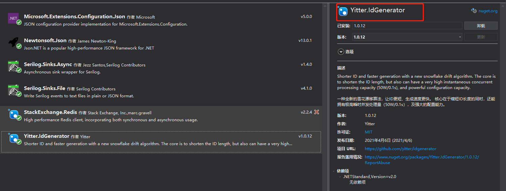
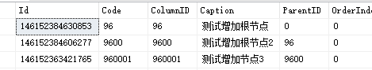

又好久不写东西了，最近在开发一个新项目的时候，需要用到发号器，之前有CV过一个雪花算法（snowflakes）的实现方法，但那个比较传统，也有一个大多数雪花算法的通病，就是生成的id过长，传到前端的时候需要转成字符串，不然js解析会失准。
说到这，简单说一下为什么要用雪花算法来做发号器，当然网上也有各种看法，我就简单说说自己的看法。
在关系型数据库的表结构里，主键的作用是非常重要的，在以前的项目里，我一般选择uuid（guid）或者自增种子来用作主键，这两种主键的方式都有各自的优缺点。比如uuid最大的优点就是不依赖任何外部方式，仅凭数据库本身或者代码自带的能力就可以生成，而且近乎绝对的唯一，缺点就是，uuid本身没有任何业务型，当我们检索数据的时候，不得不依赖主键之外的其他字段作为排序字段，当数据量到一定规模后，这是非常损耗性能的操作，而且，也不利于分库分表的操作，但uuid也有非常适合的使用场景，比如做某些请求日志相关模型的主键。
而自增id则会丧失一部分的灵活性，当我们需要手动获得主键值执行插入操作的时候，操作会比较麻烦，不像uuid那样可以提前生成。而且在高并发场景下，自增id的生成，容易发生冲突，造成业务执行失败。
因此，我们需要一种既能保证唯一，支持高并发，且具有业务性特点的字段值作为主键，雪花算法便具备以上特点，而且，使用雪花算法还有一个很大的好处是，它的生成是有规律的，我们可以直接逆向解析用雪花算法生成的值，得到对应的机器码，时间戳等内容。
更多的我就不介绍了，看一下这个新的雪花算法把，开源地址如下https://gitee.com/yitter/idgenerator，文档的介绍也非常完整，不再多说，直接来看下应用场景吧。我这里是在.net(core) 5.0框架下进行引用
首先根据文档，在项目中引入Yitter.IdGenerator，可直接通过cli命令（packages install Yitter.IdGenerator）或者在nuget包里直接搜索下载；

然后新建一个接口文件，定义好需要的抽象函数
1 | public interface IYitIdHelper |
接下来引入helper操作类或者自己创对应的类，并调用算法
1 | public class YitIdHelper: Interfaces.IYitIdHelper |
最后，我们在startup文件的ConfigureServices函数里，注入服务，根据文档的介绍，把服务的生命周期注入成单例模式
1 | public void ConfigureServices(IServiceCollection services) |
然后就可以在需要的地方进行调用了生成了
1 | public class UserAdminTeamRespo :RespositoryBase<User_AdminTeam>,Interfaces.IUserAdminTeamRespo |
如此便完成了集成的工作，看下生成的效果。
